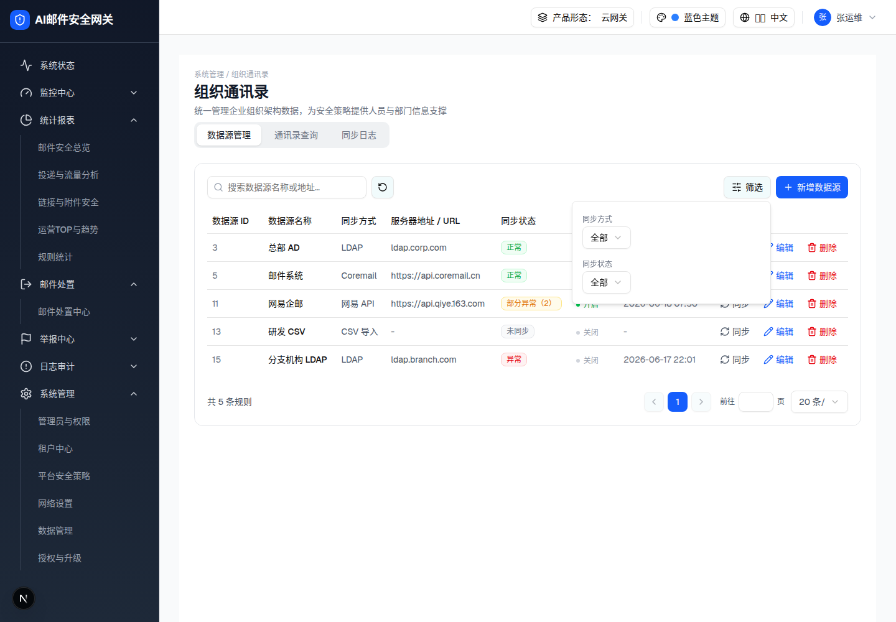
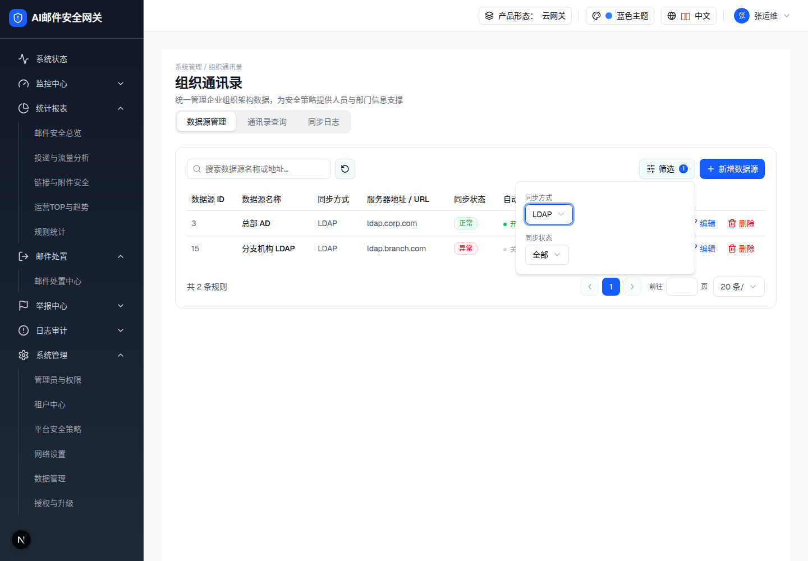

| 所属组件 | 2.2 数据源管理 Tab |
| 触发路径 | 层级0 工具栏「筛选」按钮 → Popover 弹层（align=end，宽 320px） |
| 关闭方式 | 点击弹层外任意处 / Esc |
预览可操作：两个下拉均可打开选项菜单，选中后即时过滤下方表格、更新「共 N 条规则」与「筛选」按钮上的计数徽标（demo 行为：onValueChange 即时过滤并重置到第 1 页）。选项菜单为规格侧按 demo SelectContent 源码逐字复刻（Radix 弹层 JS 不在快照内），见比对表。
| 数据源 ID | 数据源名称 | 同步方式 | 服务器地址 / URL | 同步状态 | 自动同步 | 最后同步时间 | 操作 |
|---|---|---|---|---|---|---|---|
| 3 | 总部 AD | LDAP | ldap.corp.com | 正常 | 2026-06-18 09:12 | ||
| 5 | 邮件系统 | Coremail | https://api.coremail.cn | 正常 | 2026-06-18 08:55 | ||
| 11 | 网易企邮 | 网易 API | https://api.qiye.163.com | 部分异常（2） | 2026-06-18 07:30 | ||
| 13 | 研发 CSV | CSV 导入 | - | 未同步 | - | ||
| 15 | 分支机构 LDAP | LDAP | ldap.branch.com | 异常 | 2026-06-17 22:01 |


| 元素 | 规格（浏览器实测） |
|---|---|
| 弹层容器 | Popover，w-80（320px），白底圆角边框阴影，align=end 锚定筛选按钮 |
| 同步方式下拉 | label「同步方式」（text-xs 灰）；选项：全部（默认）/ LDAP / Coremail API / 网易企邮 API / CSV 导入 |
| 同步状态下拉 | label「同步状态」；选项：全部（默认）/ 正常 / 部分异常 / 异常 / 未同步（注意：无「同步中」选项 —— 瞬态不可筛） |
| 生效方式 | 选中即生效（无「确认」按钮，与 spec §3.1「点击确认后列表刷新」不同 —— 已并入 §9 口径：以 demo 为准） |
| 计数徽标 | 筛选按钮右侧蓝色圆形徽标，值=生效条件数（0 时不显示） |
| 比对项 | demo 实际 DOM | 嵌入的 HTML | 是否一致 |
|---|---|---|---|
| 弹层根节点 | [data-radix-popper-content-wrapper] | 同（快照原样嵌入，规格侧仅中和绝对定位） | 一致 |
| 弹层节点数 | 14 | 14 | 一致 |
| 下拉触发器数 | 2（同步方式 / 同步状态，均 role=combobox，值「全部」） | 2 | 一致 |
| LDAP 过滤结果 | 2 行（s1b 快照表格节点数 78，对比默认 177） | 预览内选 LDAP 实测 2 行 | 一致 |
| 选项菜单 | Radix Portal 动态挂载（快照外） | 规格侧按源码复刻的简化菜单（选项文案逐字一致） | 一致 |